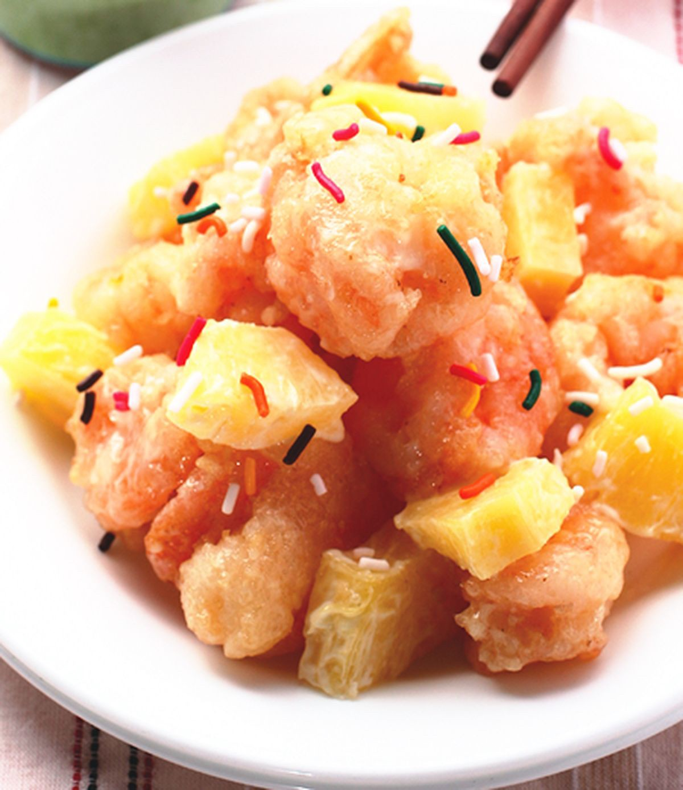
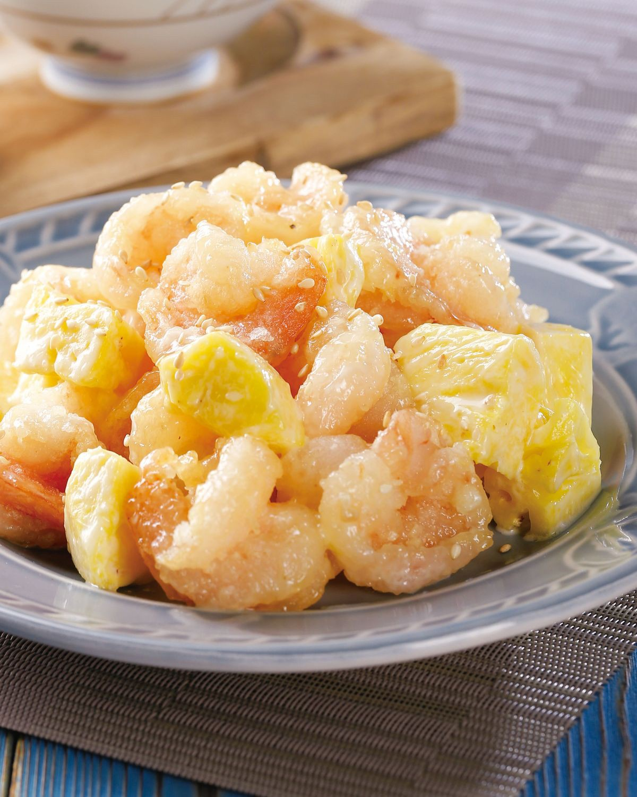
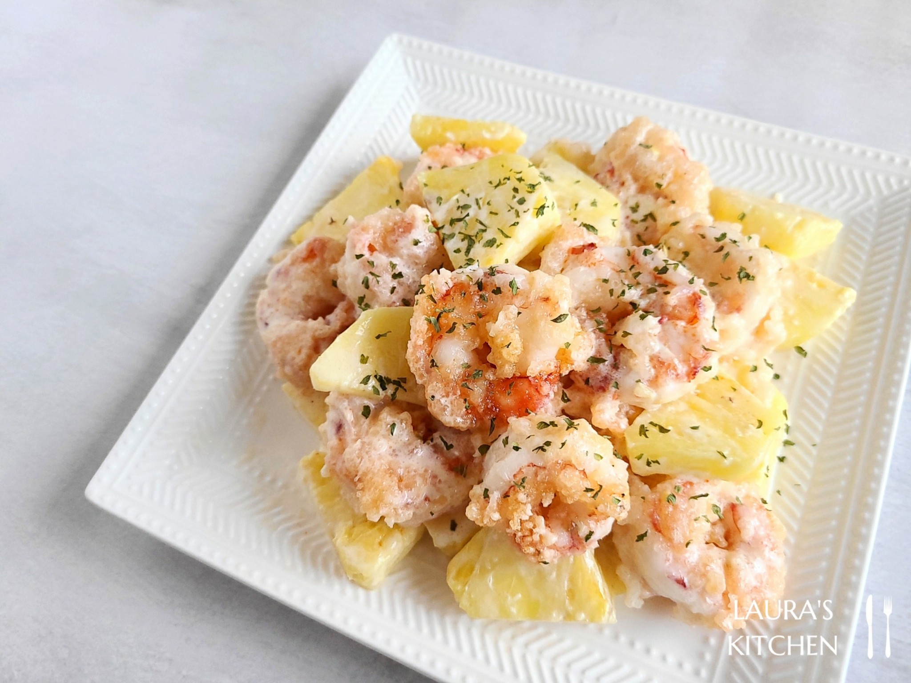

步驟2 醃蝦仁：先用蛋白、鹽巴、玉米粉抓醃，抓到起泡泡，再放米酒去腥（靜置10分鐘)
步驟3 等待時間來調沙拉醬，擠出沙拉醬，擠檸檬汁加入，加鹽巴，拌入鳳梨，攪拌均勻。
步驟4 蝦仁均勻裹上酥炸粉，裹完靜置5-10分鐘等反潮（炸的時候才不易脫粉）。
步驟5 大火熱油鍋（用一點粉丟進油鍋，起泡浮起就代表溫度可以了。）炸蝦仁炸到金黃色起鍋，火不要關，等待10秒再下鍋搶酥一下再起鍋。
步驟6 趁熱加入沙拉醬拌勻。 可以撒上一點檸檬皮屑裝飾一下
  
火腿玉米蛋炒飯介紹 糖醋排骨介紹 宮保雞丁介紹 心得
練習 影片 音樂
Your browser does not support the audio element. Your browser does not support the video tag.